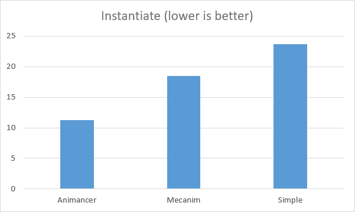
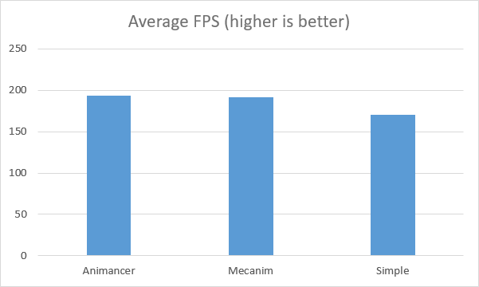

This page needs to be updated for Animancer v4.0.
Animancer is notably faster at Instantiation and very slightly faster in Average Frame Rate, though the differences are small enough not to matter.
The following benchmarks compare the performance of several animation systems:
- Animancer: this plugin.
- Mecanim: Unity's main animation system.
- Simple Animation: another animation system made by Unity with the Playables API and available on GitHub.
The differences shown by these tests are relatively small, especially when taking into account everything else a game will be doing. It's generally better to choose the system which will make development easiest.
The Unity Manual has a page about general Animation Optimization which is still applicable when using Animancer.
Instantiation
Animancer takes ~40% less time than Mecanim and ~53% less time than Simple Animation.

This benchmark tests the time taken to call Object.Instantiate on a prefab 100 times in a row.
- Results are milliseconds taken for the calls - lower is better.
- The large discrepency comes from the fact that Mecanim and Simple Animation both allocate states for all of their animations immediately while Animancer only creates them when necessary.
Average Frame Rate
Animancer is ~1% faster than Mecanim and ~11% faster than Simple Animation.

This benchmark counts the number of frames rendered in 30 seconds to calculate the average number of frames rendered per second while animating 100 models.
- During the test, each model is periodically commanded to play a particular animation from a set of 7 options to include the cost of their commands/fading/etc. in the factors being tested.
- The sequence was set so that the number of commands given in a row and the number of models fading at a time would change throughout the duration, however the exact same sequence was repeated every time for every system to ensure a valid test.
- Tests were conducted with the models off-screen (with the
Culling Modeset toAlways Animate) so their rendering wouldn't affect the frame rate. Otherwise the results were simply smaller numbers that fluctuate much more. - Results are average frames per second - higher is better.
Notes
- Tests were conducted in a runtime build so results would not be affected by editor-only functions.
- Tests were conducted using Animancer Pro since the code obfuscation of the Animancer Lite DLLs has a small negative impact on performance.
- Each test was conducted 10 times and the results averaged. The results were quite stable and no significant outliers were found.
Test Environment
- Unity 2018.1.0f2
- OS: Windows 10
- CPU: i7-7700HQ
- GPU: GTX 1050
- RAM: 8GB